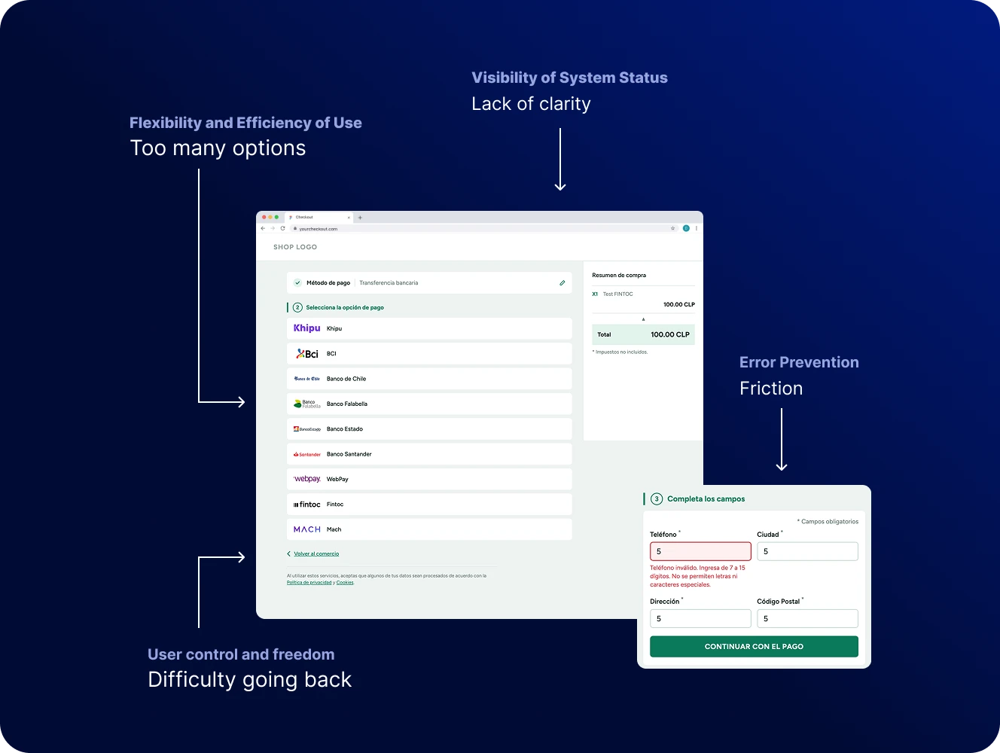
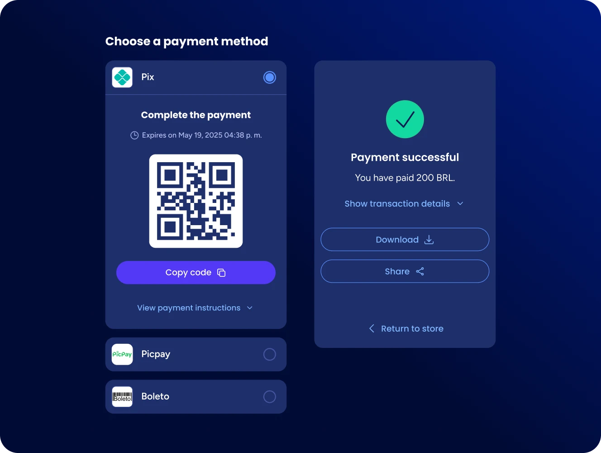

01. The challenge
Simplifying the payment experience across seven Latin American markets
Our goal was to simplify the payment experience and improve conversion. The hard part was offering one shared experience across seven countries with very different habits and payment methods: cards, bank transfers, QR codes or cash. Some markets had more than 20 options.
We needed a mobile-first solution that was intuitive and easy for each merchant to make their own.
- 1Checkout
- 7Markets
- 20+Payment methods in some markets
02. Understanding the problem
From complexity to a clear direction
There was no clear product definition of the payment methods, their priority in each country or the information each transaction needed. I proposed starting with a heuristic evaluation of the existing checkout and a competitor benchmark, which my team carried out. From their findings, we reviewed the main problems together and defined where to improve.
The analysis revealed four key challenges:
- Cognitive overload: Too many payment options and unnecessary steps.
- Lack of clarity: Limited visibility of progress and unexpected redirects.
- Inconsistent experience: Different patterns across payment flows, vouchers and loading states.
- Friction and recovery: Intrusive form validation, unclear errors and limited navigation control.
These findings gave us a direction before we started designing.

03. Exploring before deciding
Two proposals. One decision based on data
I challenged the team to explore different interaction models. We shortlisted two: Accordion, which organised the methods into sections that open and close, and Steps, which guided shoppers through one stage after another. We chose Accordion for a strategic reason: Brazil was our main market, and around 80% of shoppers there paid with Pix. Our hypothesis was that showing Pix already open, with the QR code visible, would cut the interactions needed to pay.
We wanted to A/B test both proposals, but time and resources were limited, so I negotiated priorities with Business and Engineering. Together we agreed to go ahead with Accordion, measure how it performed and iterate on real data.


04. Leading through direction, not execution
Giving the team clear criteria and autonomy
My role was to guide the process, challenge the solutions and help the team make better decisions. I set clear criteria: mobile first, only the essential information, as few interactions as possible, and a clickable prototype with a fictional merchant so stakeholders could try the solution and give feedback in a realistic setting.
The aim was to keep the quality bar high while giving the designer the autonomy to explore and develop the solution.
05. Designing to scale
One shared experience. Many ways to pay
We designed a market-agnostic solution that adapts to different payment methods, integrations and merchants. We defined reusable patterns for selection, forms, QR codes, vouchers, redirects and transaction states.
To get there, we built on our design system, created from scratch by my product designer, who proposed connecting design and code with AI to speed up development.
My role was to champion the design system as a strategic project, make its value visible and drive its adoption across all the company’s products.
The result is a more consistent experience, faster frontend development and plenty of room for each brand to make it its own, which adds value for Engineering and for the business.
06. Measure, learn, evolve
Design doesn’t end at handover
From design, we worked with Analytics and Engineering to define which behaviours we wanted to measure and how to judge the new experience.
We proposed the events and interactions to track in FullStory, and worked with Engineering on implementing them, to find opportunities to improve and support the gradual rollout of the checkout across markets.
This lets us keep evolving the product from real data and tie design decisions to business goals.
Scaling continuous improvement with AI
As we rolled out the redesigned checkout to more markets, we needed a more efficient way to identify, track, and report issues at scale.
We saw an opportunity to use AI to analyze end-to-end checkout recordings, thousands of Fullstory sessions, and support tickets. By bringing these sources together, we aimed to uncover recurring points of friction and identify opportunities to improve the payment experience.
As Product Design Lead, I defined the process from reviewing evidence to documenting and reporting issues. The Product Designer used that process to design the AI-assisted workflow.

This project reflects how I lead design: bringing clarity to complex problems, growing the team’s autonomy and tying design decisions to business goals.
I believe the value of design lies not only in the experiences we create, but also in the teams, systems and processes we build to keep improving them.